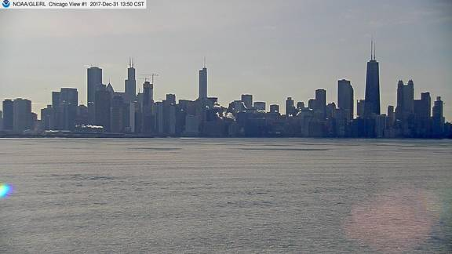
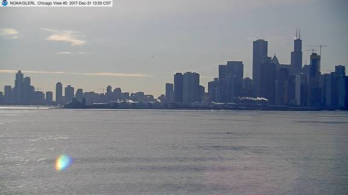
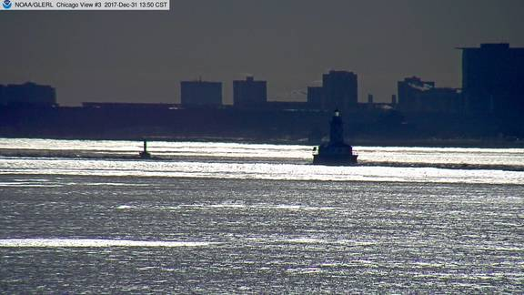

|
Back to Met Station Array Page Milwaukee | Chicago | Michigan City | South Haven | Muskegon | Alpena | Thunder Bay Island | Toledo Light #2 Real-Time Meteorological Observation Network
See Metadata File for full description of instruments and parameters, as well as site maps.
| ||||||||||||||||||||||||||||||||||||||||||||||||||||||||||||||||||||||||||||||||||||||||||||||||||||||||||||||||||||||||||||||||||||||||||||||||||||||||||||||||||||||||||||||||||||||||||||||||||||||||||||||||||||||||||||
|
Conditions at 1:50 pm CST on 12/31/2017 (DOY 365 19:50 GMT)
(Updated at about 08,23,38,53 minutes past the hour)
|
Click on image to enlarge
(images updated 6X per hour) Webcam Location & Info    6-hr animations: 1 2 3 Previous 48 images (top of hour only): 1 2 3 All Images (past 14 days) Nearby Webcams (external sites): Chicago, facing east courtesy of LakeVision.com Loyola University Lake Shore Campus Loop and Lake Michigan courtesy of ABC News Comments? |
|||||||||||||||||||||||||||||||||||||||||||||||||||||||||||||||||||||||||||||||||||||||||||||||||||||||||||||||||||||||||||||||||||||||||||||||||||||||||||||||||||||||||||||||||||||||||||||||||||||||||||||||||||||||||||
Note: Wind chill is set to -99 if air temp > 40 F or wind speed < 3 mph |
||||||||||||||||||||||||||||||||||||||||||||||||||||||||||||||||||||||||||||||||||||||||||||||||||||||||||||||||||||||||||||||||||||||||||||||||||||||||||||||||||||||||||||||||||||||||||||||||||||||||||||||||||||||||||||
|
Click here for today's 2-minute data: 20171231.04t.txt, data format (metadata) Click here for past data: 2017 | Archive Access current marine observations on your mobile device. See NDBC's mobile access page. These data are also available from NDBC website and NDBC's Dial-a-Buoy Program. See also NWS Marine Forecast for this area, and NWS Recreational Beach Forecast Realtime Data Disclaimer Special thanks to City of Chicago, IL / Water Department, USACE Additional Great Lakes Meteorological Observations » NWS, Grand Rapids Office: Near-Realtime Marine Weather, includes current conditions and forecasts» NWS, White Lake Office: Near-Realtime Marine Weather, includes current conditions and forecasts » NDBC Great Lakes ImageMap showing U.S. and Canadian Buoys and C-MAN Stations » NOAA CoastWatch Great Lakes NOAAPORT Data, includes all station types » NOAA's NowCoast: Web mapping portal to real-time coastal observations » Winds courtesy of iWindsurf.com » NWS Great Lakes Marine Text Forecasts by Zone » Links to Great Lakes Water Temperature, Wind/Wave Data, & Water Levels » Additional Great Lakes WebCams from GLIN » GLIN: Great Lakes Information Network Comments? | ||||||||||||||||||||||||||||||||||||||||||||||||||||||||||||||||||||||||||||||||||||||||||||||||||||||||||||||||||||||||||||||||||||||||||||||||||||||||||||||||||||||||||||||||||||||||||||||||||||||||||||||||||||||||||||

{kind=link}
{kind=link}
{kind=link}
{kind=link}
{kind=link}